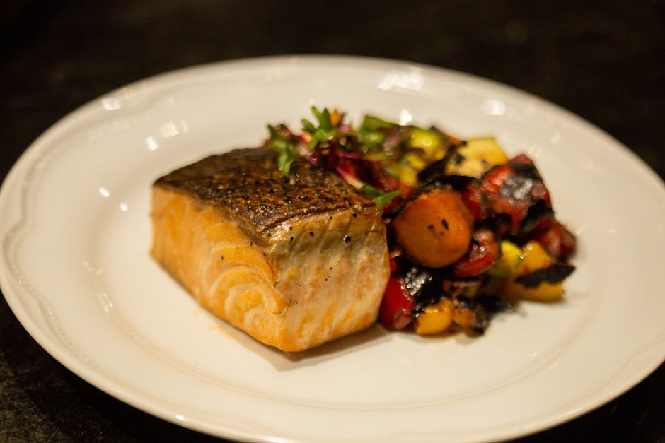

← Back to all nutrition guides | About Our Content
How Men Over 50 Should Eat
Reviewed by The Today's Food Coach Team
Our team of nutrition researchers and AI specialists ensures every guide is accurate and practical.
A realistic guide for busy professionals over 40.
As men reach the age of 50, their bodies undergo various changes that impact metabolism, muscle mass, and overall health. Eating the right foods becomes crucial for maintaining energy levels, supporting weight loss, and ensuring long-term well-being. For men aged 40 to 65, adopting a balanced diet doesn't have to involve complex calorie counting. Instead, it is about making smarter food choices that nourish the body and promote a healthier lifestyle. By focusing on whole foods, proper nutrient intake, and portion control, men can achieve their weight loss goals while enjoying the food they love. In this article, we will explore how men over 50 should eat to lose weight effectively and enhance their health without the stress of tracking every calorie.
Want a personalized version of this strategy?
Try the AI Food Coach
Why How Men Over 50 Should Eat Matters
Nutrition plays a vital role in the health and well-being of men over 50. As men age, they often experience a decline in muscle mass and a slower metabolism, which can contribute to unwanted weight gain. Moreover, the risk of developing chronic diseases such as heart disease, diabetes, and high blood pressure increases with age. A well-balanced diet can help mitigate these risks by providing essential nutrients that support bodily functions. Eating better not only aids in weight loss but also improves energy levels, mental clarity, and overall quality of life. Proper nutrition can also enhance recovery from injuries and support active lifestyles, which are crucial as men age. Understanding how to eat well can lead to sustainable habits that promote long-term health, making it easier to maintain a healthy weight and enjoy an active lifestyle.
Simple Strategy
- Focus on whole foods like fruits, vegetables, lean proteins, and whole grains.
- Pay attention to portion sizes and listen to your body's hunger cues.
- Stay hydrated by drinking plenty of water throughout the day.
These strategies work best when personalized to your lifestyle and goals.
Build Your Personalized Nutrition Plan
Most people know what foods are healthy. The hard part is knowing what to eat today. Today's Food Coach creates a simple, personalized daily plan based on your goals and lifestyle.
Start Your PlanExample Day of Eating
A sample day of eating for men over 50 could start with a breakfast of oatmeal topped with berries and nuts. For lunch, a salad with grilled chicken, mixed greens, and a vinaigrette makes a nutritious choice. In the evening, grilled salmon with steamed broccoli and quinoa provides a satisfying dinner. Snacking on fresh fruit or yogurt can help curb cravings, ensuring that meals are balanced and nourishing.
Common Mistakes
- Skipping meals in an attempt to lose weight.
- Relying too heavily on processed foods that are high in sugar and unhealthy fats.
- Neglecting the importance of hydration and drinking enough water throughout the day.
Practical Tips
- Plan your meals ahead of time to make healthier options easier.
- Incorporate more fiber-rich foods to promote satiety and digestion.
- Aim for regular physical activity to complement your nutritional efforts.
Frequently Asked Questions
What foods should men over 50 prioritize?
Men over 50 should prioritize whole foods such as fruits, vegetables, lean meats, whole grains, and healthy fats to support their health.
Is it necessary to count calories for weight loss?
No, men over 50 can lose weight effectively by focusing on portion control and making healthier food choices without counting calories.
How much water should I drink daily?
Aim for at least 8 cups of water per day, but adjust based on activity level and individual needs.
Related Nutrition Guides
- What To Eat When Eating Out On A Diet
- Quick Healthy Meals For Busy Men Over 40
- Simple Diet Plan For Busy Professionals
Try Today's Food Coach
Generate a personalized meal strategy based on your lifestyle and goals.
Try the AI Food Coach